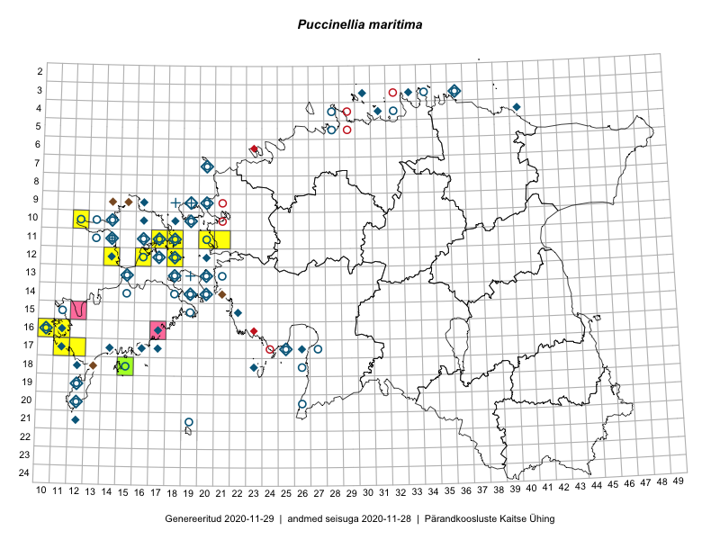

Puccinellia maritima
Uuendatud: 2016-12-02
Kaardile koondatud taksonid: Puccinellia maritima (Huds.) Parl.

Kaart põhineb 14 vaatlusel. Taksonit on leitud 13 ruudust.
Viited andmebaasikirjetele
- Peedu Saar, Liina Oja: 2015-07-20: 08-44: ala
- Toomas Kukk: 2014-06-18: 18-15: ala
- Eeva-Maria Jeletsky, Tarmo Niitla: 2015-06-26: 10-12: ala
- Eeva-Maria Jeletsky, Tarmo Niitla: 2015-06-17: 11-17: ala
- Eeva-Maria Jeletsky, Tarmo Niitla: 2015-06-20: 11-17: ala
- Eeva-Maria Jeletsky, Tarmo Niitla: 2015-06-17: 11-18: ala
- Eeva-Maria Jeletsky, Tarmo Niitla: 2015-06-25: 12-14: ala
- Eeva-Maria Jeletsky, Tarmo Niitla: 2015-06-21: 12-16: ala
- Mari Reitalu: 2015-05-22: 16-11: ala
- Mari Reitalu, Triin Reitalu: 2015-07-22: 17-12: ala
- Mari Reitalu, Triin Reitalu: 2015-08-05: 17-11: ala
- Sirje Azarov, Mari Reitalu: 2015-06-22: 16-10: ala
- Hanna-Eliisa Luts, Tõnu Ploompuu: 2015-08-13: 11-21: ala
- Hanna-Eliisa Luts, Tõnu Ploompuu: 2015-08-13: 11-20: ala